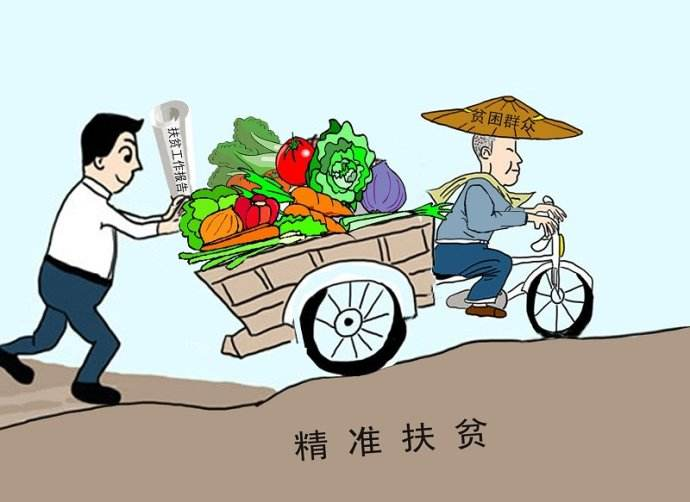

targeted poverty reduction
Is the symmetry of extensive poverty alleviation, is the pointer to the environment of different poverty areas, Accurate identification of poverty alleviation objects by scientific and effective procedures according to different conditions of poor peasant households. Precise help, accurate management of poverty. Generally speaking, targeted poverty alleviation is mainly for poor residents, who will be supported by the poor.



The important idea of "precision poverty alleviation" was first proposed by
xi when he visited xiangxi, hunan province, in November 2013. [1] in January 2014,
the office formulated the top-level design of the precision poverty alleviation work mode in detail,
which promoted the implementation of the idea of "precision poverty alleviation". In March 2014,
when xi attended the deliberation of the NPC and CPPCC delegations, he emphasized the need to carry out
targeted poverty alleviation, target poverty alleviation, and carry out key policies. The concept of targeted poverty
alleviation is further explained [2]. In January 2015, general secretary xi jinping chose yunnan as his first research location
for the New Year. The general secretary stressed to resolutely fight against poverty alleviation and development and
accelerate the economic and social development of ethnic regions. Five months later, the general secretary to adjacent
to yunnan guizhou, emphasize to scientifically make good "much starker choices-and graver consequences-in" poverty alleviation
and development work, to ensure that the poor out of poverty by 2020, and put forward the poverty alleviation and development
"in precise, accurate, success or failure of lies in the accurate", "accurate poverty alleviation" as hot keywords from all walks of life.
On October 16, 2015, xi jinping stressed on poverty reduction and development 2015 top BBS,
crucial to accurate strategy for poverty alleviation in China, increase poverty alleviation investment,
have preferential policies and measures, insist on China's institutional advantages, pay attention to the six precision,
insist on classification ShiCe, because people because ShiCe, because of poor reason ShiCe, type ShiCe by poverty,
by supporting the development of a batch of production and employment, through the change of relocation of a batch of,
through poverty a batch of ecological protection, through the education poverty alleviation of poverty a batch, through low policy
out a batch of, widely mobilize all social forces to participate in poverty alleviation

The people are the masters of the country
"" cadres and the masses of all ethnic groups should cherish national unity as much as they cherish their own eyes, and value national unity as much as they cherish their own lives," "xi said.
The old revolutionary base areas of China are referred to as old revolutionary base areas or old revolutionary base areas, which refer to the revolutionary base areas established under the leadership of the older generation of proletarian revolutionaries.